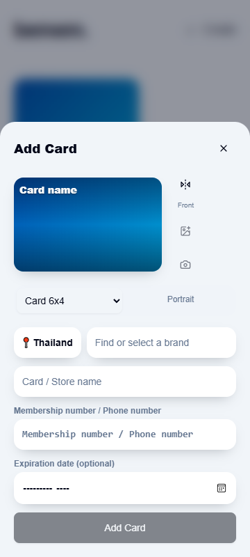
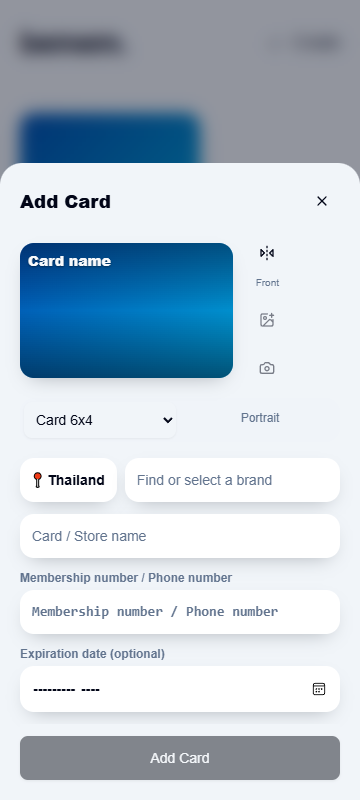

A · Source reconstruction
360×800 CSS px · Footer ไหลตามฟอร์ม ตามโครงสร้างเว็บที่ตรวจพบ ใช้ Font fallback ตามที่ระบุในเอกสาร

ใช้โครงสร้างและสัดส่วนจาก Source เว็บเดิม ไม่ได้เปลี่ยน Design System หรือแก้ Expo App
ยังไม่ได้รับ Screenshot ต้นฉบับหรือ Screenshot React Native จาก Samsung ในข้อความนี้ ภาพ A จึงเป็นการถอด Source ลง HTML ไม่ใช่ภาพเว็บที่เปิดจริง ส่วน B เป็นการวิเคราะห์โค้ดปัจจุบัน ไม่สร้างภาพที่อ้างว่าเป็นผลจากโทรศัพท์
360×800 CSS px · Footer ไหลตามฟอร์ม ตามโครงสร้างเว็บที่ตรวจพบ ใช้ Font fallback ตามที่ระบุในเอกสาร

ไม่มี Screenshot ที่ยืนยันจาก Samsung ในรอบนี้
อ้างอิง AddCardForm.tsx, AddCardSheet.tsx, CardAppearancePreview.tsx และ dev-add-card.tsx ซึ่งไม่ได้แก้ในรอบนี้
360×800 CSS px · สัดส่วนจาก Source พร้อม Sticky Footer ตามคำขอ ไม่มี Development banner ในฟอร์ม

| องค์ประกอบ | A · เว็บ Source | B · Native ปัจจุบัน | C · Draft |
|---|---|---|---|
| Sheet | Max 92%, padding 20, radius 22 | Max 92%, Header/body/footer แยก | ค่าหลักจาก Source |
| Preview / Tools | 2/3; 1.586; Icon 16 บนปุ่ม 36 | Flex basis 200; ปุ่มข้อความ | 2/3; 1.586; SVG เดิม 16/36 |
| Typography | Plus Jakarta Sans; H18/800, body14 | Manrope; field16, heading20 | กำหนด Font เดิม; ใช้ Arial fallback เมื่อไม่มี Font ในเครื่อง |
| Density | Gap12, Country + Brand แถวเดียว, Input44 โดยคำนวณ | Gap14, Input52 และคำอธิบาย | Gap12, แถว Country/Brand เดียว, Input44 |
| Footer | Normal flow, h44 | อยู่นอก Scroll body | CSS sticky ภายใน Scroll; source-flow toggle |
| Responsive | Full screen; ≥640px Phone400×860 สูงไม่เกิน92vh | Native flexible width, max600 | ตาม Source; ยังต้องเทียบ Screenshot และคีย์บอร์ดจริง |
Draft 412×915 PNG · เปิดแบบกรอกข้อมูลและสลับด้านเพื่อดู Layout
Visual draft เท่านั้น · Add Card ไม่บันทึก · Image/Camera ปิดใช้งาน · ไม่มี QR/Barcode จำลอง · ไม่มี Network/Storage